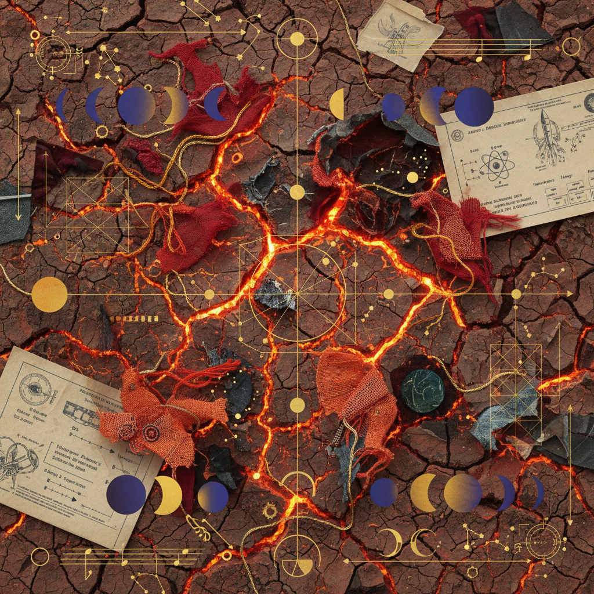

Root to Vision
Taurus New Moon to Sagittarius Full Moon. A transmutation of the anchored throat into the expansive hip.

The Stability Anchor
Begin with the vocal cords. The Taurus influence demands a resonance that vibrates through the jaw and into the cervical spine. Hum a low 'D' note for three cycles of nine.
Thyroid Plexus & Vocal Tension
Soleus Muscle & Earth Contact
Element: Earth
The stubborn density of the physical form. We must honor the clay before it is fired.
Element: Fire
The aspirational reach of the Sagittarius moon. The arrow seeking the vanishing point.
The Graduate Research Prompt
How does the sensation of 'stability' in the throat change your perception of the distant horizon? Document the shift in visual acuity.
Trace the path from the pelvic bowl (Sagittarius) back to the jawline. Where does the heat dissipate into form?
The Hyoid Bone
Serving as the primary anchor for the tongue and throat muscles. In this workbook, we treat the hyoid as the 'keystone' of the Taurus-Sagittarius axis.
Culmination Peak
The Sagittarius Full Moon marks the exact moment of 'Rooted Expansion'. The archer stands firm so the arrow may travel without deviation.
432 Hz Resonance
Mathematical alignment with the natural curvature of the earth. Utilize this frequency during the hip-mobility somatic protocol.